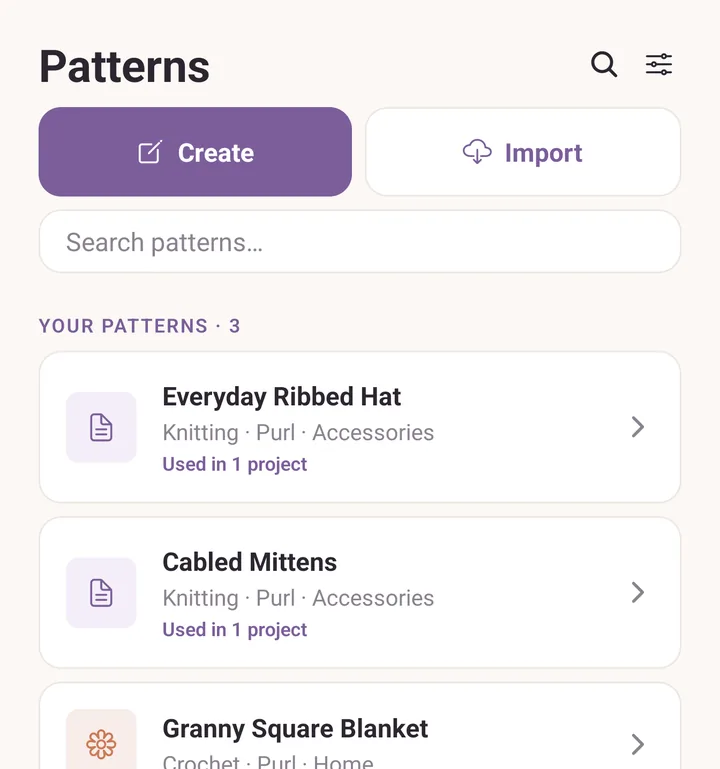
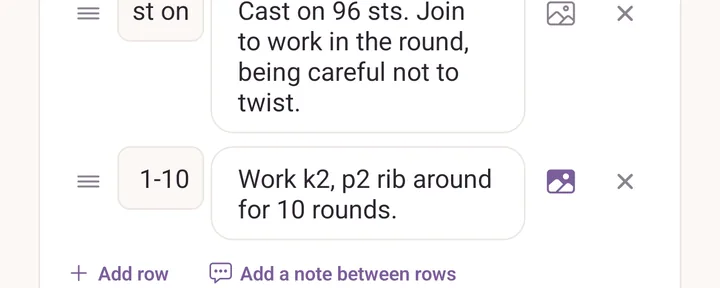
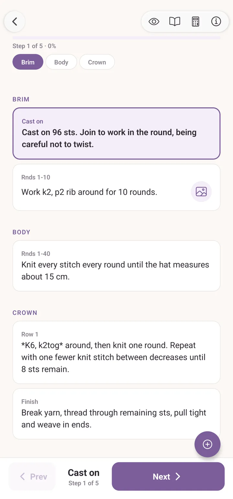

Patterns
Two kinds: PDF patterns you have bought or downloaded, and written patterns you type in yourself. Both live in the Patterns tab, both can be attached to a project, and both have a reading mode that keeps your place.
Importing a PDF
Tap Patterns, then Import, and pick a PDF from anywhere your device can reach: Downloads, Drive, Files, iCloud. Purl copies it into its own storage, so you can delete the original.
You can also send a PDF into Purl from another app. On iPad and iPhone, open it in Books, Files, Mail or Safari, tap the share button, and pick Purl. On Android, open it from Gmail, Drive or a file manager and choose Purl under Open with.
If you pick something that is not a pattern, Purl says so rather than adding a broken card. Hand it a backup file and it answers Some files were skipped, and tells you to use Export & import in the More tab instead.
The first time you open a PDF, Purl draws a thumbnail of page 1 for the cover. You can replace it with any photo: tap the pattern, tap Edit, then Photo in Pattern details.

The PDF viewer
Tap a PDF pattern to open it. The round floating button fans out eight tools: Counters, Row tracker, Highlight, Bookmarks, Calculator, Terminology, Find & navigate and Pin a snippet. Pen, marker and ruler are inside Highlight, and sticky notes are inside Bookmarks.
Scroll with your finger, pinch to zoom, triple-tap to reset the zoom. Your drawings, notes, counters and reading position are saved as you go, so you land back where you were days later.
PDF tools is the deep dive, and Read a pattern walks the whole thing through once.
On an iPad
Give Purl a screen wider than about a large phone in landscape and the Patterns tab splits in two: the list on the left, the selected pattern's details on the right. Tapping a card fills the right-hand pane instead of pushing a new screen, which is why nothing seems to open until you look across. Phones stay in portrait unless you turn on Allow rotation under Layout in Settings.
On a tablet the pattern opens beside the list, not on top of it.
Writing your own pattern
Tap Patterns, then Create. The editor is built from sections and the rows inside them:
- A section is a chunk like "Cuff", "Body" or "Sleeve".
- A row inside it is one instruction. Give it a label, usually the row number, and the text.
Add a note between rows drops in a line that is not a row: a warning about the next decrease, a reminder to try it on. It gets its own line in the reader and is never counted as a step.
Hold and drag the handle at the left of a row to move it. Rows and sections both reorder that way, so a forgotten row does not mean retyping the rest.
The other fields: title, designer (which autofills from patterns you already have), craft, photo and category, plus free-text Gauge, Sizes, Materials and Notes, and Abbreviations, your own glossary for this pattern.
A photo for a row
Every row has a small image button. Tap it to open Photos for this row, and either add a photo or tap one already in the pattern's gallery and choose Show on this row. An image icon then appears beside that row while you read or track the pattern, and tapping it shows the photo. Good for "this is what the join should look like".

Yarn requirements, and your stash
Under Yarn requirements you add one entry per colour the pattern needs: a label like Main or Contrast, optionally a named yarn, and metres and grams. Fill those in and Pick yarn from your stash appears on the pattern, opening Yarn for this pattern: what you already own, ranked against each requirement, with the best pick first. Without the requirements the button stays hidden, because there is nothing precise to match against.
See Yarn stash for getting yarn in there in the first place.
Charts in a pattern
A written pattern can carry colour charts. In the editor, Add chart opens the chart maker to draw one, or Add an existing chart pulls in one you already made. A photo can become a chart too. The chart maker is its own page: Chart maker.
When a pattern carries charts, a grid button appears in the reader's top right. Tap it to follow the chart stitch by stitch: arrows step stitches and rows, the readout shows where you are, and a preview button shows the chart as knitted fabric. On a chart with squares marked as no stitch, the readout also counts that row, reading S4 of 7, so you can check a shaped row as you work it.
A chart can be the whole pattern. Attach it to a project and track it straight from there, with no written rows at all.
Reading a written pattern
Tap a written pattern from the Patterns tab and it opens in read mode: just scrolling, good for skimming. Tap the eye at the top right, labelled Show tracking, to start tracking. Tracking highlights the row you are on, Next marks it done and moves on, Prev steps back, and the bar counts Step 4 of 60 with a percentage. The same button, now Read mode, goes back to scrolling. Opened from a project, the reader starts tracking straight away.
Your place is restored on return, both the row you were tracking and where you had scrolled to.
The buttons at the top right, right to left: pattern information (gauge, sizes, materials, abbreviations, Reset progress), the calculator, the terminology glossary, the read-mode switch, and the chart grid when the pattern has charts.
Counters live on the page while you track, not in the header. The draggable counter pills appear in tracking mode and disappear in read mode, which keeps the page clean when you are only skimming.

Sharing a pattern
Open the pattern and look under its details:
- Share pattern sends a written pattern as a small .purlp file through the usual share sheet. Open it on another device with Purl installed and the pattern is added.
- Share PDF file sends the PDF itself, for a pattern you imported.
Patterns you bought carry their own copyright, so think before you send one on.
Organising
- Categories: Sweater, Hat, Mittens and whatever else you add.
- Group by: None, Craft, Designer or Category, at the top of the list.
- Sort: Recent, Added, A-Z or Most used.
- Search: matches title, designer, category and craft, and ignores accents.
To get rid of a pattern, swipe its card from right to left and tap Delete. Purl asks first, and the pattern then waits in Backups & history for 30 days in case you change your mind.
Pick up where you left off
The strip at the top of the Projects tab, Pick up where you left off, holds the three projects you tracked most recently that are not finished. Tap one to go straight back into reading, skipping the project screen.
See also
- PDF tools: the deep dive on the PDF viewer.
- Chart maker: drawing and sharing charts.
- Projects: how patterns and projects fit together.
- Backups and recovery: what travels in a backup.